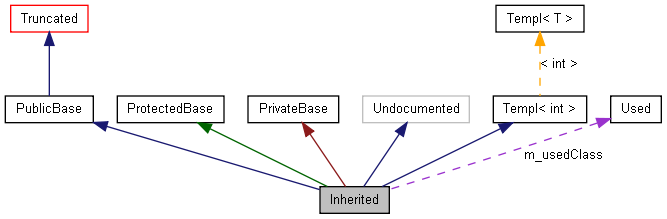

このページでは、doxygen で生成されたグラフをどのようにみたらよいかを説明します。
次の例を考えてみます。
/*! 省略されて見えないクラス */ class Invisible { }; /*! 省略されたクラス(継承関係は隠されている) */ class Truncated : public Invisible { }; /* doxygen コメントによるドキュメントがないクラス */ class Undocumented { }; /*! public で継承されたクラス */ class PublicBase : public Truncated { }; /*! A template class */ template<class T> class Templ { }; /*! protected で継承されたクラス */ class ProtectedBase { }; /*! private で継承されたクラス */ class PrivateBase { }; /*! 継承されたクラスで使われているクラス */ class Used { }; /*! 複数のクラスを継承している上位クラス */ class Inherited : public PublicBase, protected ProtectedBase, private PrivateBase, public Undocumented, public Templ<int> { private: Used *m_usedClass; };
設定ファイル中で、タグ MAX_DOT_GRAPH_HEIGHT が 200 にセットされた場合、次のようなグラフとなります。

上のグラフ内のボックスには次のような意味があります。
矢印には次のような意味があります。
1.6.1